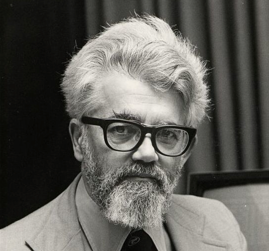
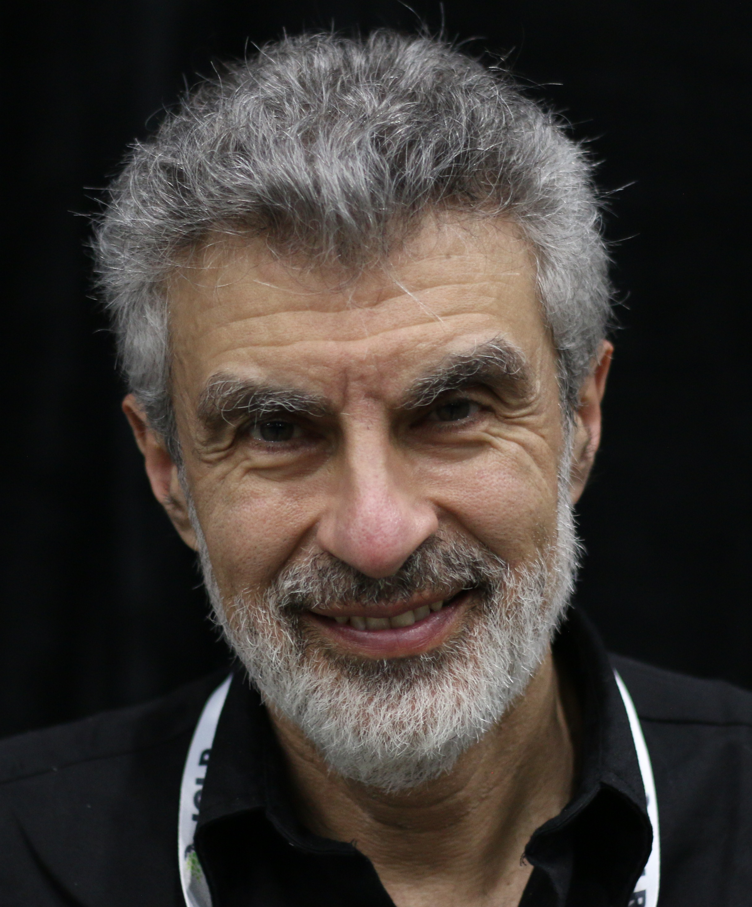
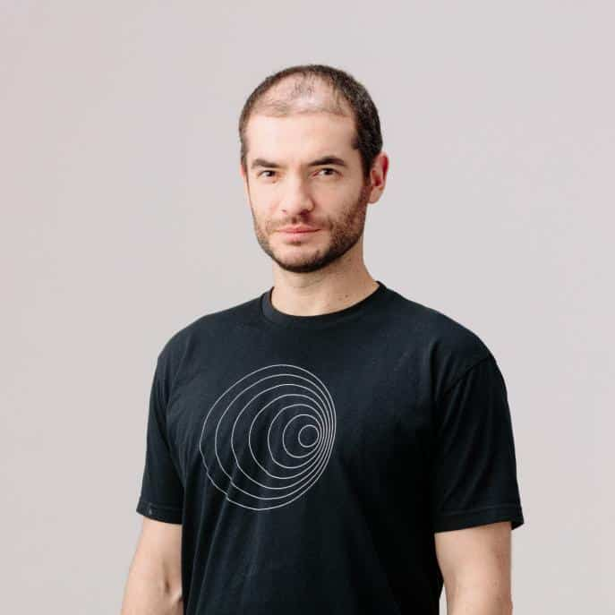
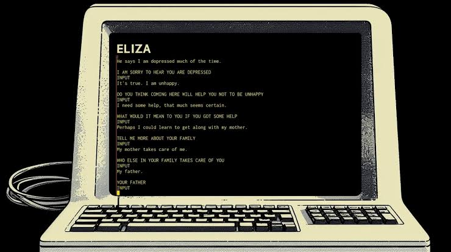

AIコース 特別授業
AIを知って、AIと創ろう
AIって、結局なに？ どこから来て、いまどこまで来ているの？ 今日は1回だけの特別授業。AIの正体と歴史、最新のようす、上手な使い方をぎゅっと学んで、最後はAIといっしょに「私の学校のPRサイト」を創る。
1知る AIの正体と歴史
2そなえる 使い方と注意
3創る 学校PRサイト
- 時間
- 60〜90分
- 対象
- 中学生
- つくるもの
- 学校PRサイト
今日のめあて
- AIとは何か、どう進化してきたかを、自分の言葉で説明できる
- 生成AIが「次の言葉の予測」で動いていること、だからウソもつくことがわかる
- 型で頼み、確かめ、対話で育てて、AIといっしょにWebサイトを作れる
第1章 知る
AIって、なに？
「AI＝ChatGPT」だと思っていないだろうか。実はAIはもっと広くて、君の毎日にとっくに溶けこんでいる。まずは「AIとは何か」をはっきりさせよう。
AIとは
人間が「頭」を使ってやっていることを、機械にやらせる技術。
見る・聞く・話す・予想する・創る。ぜんぶ「知能」の仕事だ。
「強いAI」と「弱いAI」
まだ存在しない
強いAI
人間みたいになんでも考えられるAI。映画やアニメのロボットのイメージ。世界中の会社が目指しているけれど、まだ実現していない。
いま使っているのは全部これ
弱いAI
決まった仕事だけが人間なみ（かそれ以上）にできるAI。翻訳、顔認証、おすすめ動画、そしてChatGPTも、実はぜんぶ「弱いAI」だ。
AIには2つのタイプがある
いまのAIは、大きく「見分けるAI」と「作り出すAI」に分けられる。
識別系
見分けるAI
- やること：分類する・判定する・予測する
- 例：「この写真は猫？ 犬？」
- 身近なもの：顔認証・迷惑メールの判定・動画のおすすめ
- いつから：ずっと前から、生活の裏側で活躍
生成系 今日の主役
作り出すAI
- やること：新しいものを生み出す
- 例：「猫のイラストを描いて」
- 身近なもの：ChatGPT・画像生成・作曲AI
- いつから：2022年から大ブーム
もう使っている「見えないAI」
見分ける
顔認証
スマホのロック解除
予測する
おすすめ動画
次に見たくなる動画を選ぶ
聞く・話す
音声アシスタント
話しかけると答えてくれる
見る
カメラの補正
写真を自動できれいに
変換する
翻訳アプリ
ことばを別のことばに
探す
乗り換え案内
いちばん早いルートを探す
豆知識 AIエフェクト
昔は電卓もチェスのコンピュータも「AIだ！」と呼ばれた。でも当たり前になると「ただの機械でしょ」と言われる。AIの定義は、時代とともに動くんだ。
第2章 知る
AIの歴史 ブームと冬をこえて
AIは2022年に突然生まれたわけではない。約80年前から、期待（ブーム）とガッカリ（冬の時代）をくり返しながら進化してきた。おもしろいのは、時代ごとに「AIの中身（しくみ）」がぜんぜんちがうことだ。
この物語の登場人物
まず、AIの歴史をつくった人たちの顔を見ておこう。あとで何度も登場する。
アラン・チューリング
すべての始まり。「機械は考えられるか？」を最初に問いかけ、チューリング・テストを考えた。

ジョン・マッカーシー
「AI」の名付け親。1956年のダートマス会議を開き、AI研究をスタートさせた。
ジェフリー・ヒントン
ディープラーニングの父。冬の時代もあきらめず研究を続け、2024年にノーベル物理学賞。
ヤン・ルカン
画像を見分けるAIの立役者。ヒントンらとチューリング賞を受けた「3人組」の1人。

ヨシュア・ベンジオ
言葉を扱うAIの基礎を築いた「3人組」の1人。いまはAIの安全性をうったえる研究者。

フェイフェイ・リー
「AIのゴッドマザー」。巨大な画像データベースImageNetを作り、第3次ブームの舞台を用意した。

イリヤ・サツケヴァー
ヒントンの弟子。OpenAIをつくった1人で、ChatGPT誕生の原動力になった。
- 問いチューリング
- 名前マッカーシー
- 技術ヒントンたち
- 製品サツケヴァー
ブームと冬の波
AIには3回のブームと2回の冬があった。いまは第4次ブーム（生成AI）の真っただ中だ。
時代ごとの「AIの中身」を見てみよう
-
1950年・1956年
チューリングの問い 「機械は考えられるか？」
コンピュータが生まれたばかりの時代に、チューリングが「機械が人間と区別のつかない会話をできたら、考えていると言っていいのでは？」と提案した（チューリング・テスト）。1956年のダートマス会議で「AI」という言葉が生まれた。

1956年、ダートマス会議に集まった科学者たち -
1960年代
第1次ブーム しくみ：探索（場合分けをしらべる）
迷路やパズルを「分かれ道を全部しらべる」ことで解くAI。ルールがはっきりした「おもちゃの問題」しか解けず、病気の診断や翻訳のような現実の問題には歯が立たなかった。

世界初のチャットボットELIZA（1966年）。単純なルールなのに「話を聞いてもらえた」と感じる人が続出した -
1970年代
第1の冬
「もうすぐ人間なみのAIができる」という期待が空振り。ガッカリが広がり、研究のお金が消えた。
-
1980年代
第2次ブーム しくみ：知識とルール（人間が教えこむ）
専門家の知識を「もし〜ならば〜」のルールとして大量に書きこむ「エキスパートシステム」が流行。でも常識は例外だらけ（「鳥は飛ぶ。でもペンギンは…」）で、ルールを書ききれずに行きづまった。
-
1990年代
第2の冬 でも、種は育っていた
再びガッカリの時代。でもヒントンたちは、この間もあきらめずにニューラルネットワークを研究し続けていた。この粘りが、のちに世界を変える。
-
2012年
第3次ブーム しくみ：機械学習（データから自分で学ぶ）
大転換。人間がルールを教えるのをやめて、大量のデータからAI自身にパターンを見つけさせる方式へ。ヒントンとサツケヴァーたちのAlexNetが画像認識コンテストで圧勝し、ブームに火がついた。2016年にはAlphaGoが囲碁の世界トップ棋士に勝った。
2016年、AlphaGo対イ・セドル戦 -
2017年
Transformer登場 すべての転換点
Googleの研究者が発表した新しいしくみ「Transformer（トランスフォーマー）」が、その後のAIすべての土台になる。ChatGPTの「GPT」のTはこれ。
-
2022年〜
第4次ブーム しくみ：生成（次を予測して創る）
2022年11月、ChatGPT登場。たった2か月で1億人が使う、史上最速の大ヒット。文章・画像・音楽・動画をAIが「創る」時代へ。君がいま生きているのが、この時代だ。
歴史のいちばん大きな転換点
人間が教える から、機械が学ぶ へ。
探索（しらべる）→ 知識（教えこむ）→ 学習（自分で学ぶ）→ 生成（創り出す）。しくみの進化として覚えよう。
ここまでの言葉を、1枚の図に整理しよう
「AI」「機械学習」「ディープラーニング」「生成AI」。いろいろな言葉が出てきたけれど、これらは別物ではなく、マトリョーシカのような入れ子になっている。
人間の知能（考える・見分ける・判断する）を機械で再現する技術ぜんぶ。いちばん広いことば。
人間が「もし〜なら〜する」というルールを手で書きこんだ、昔ながらのAI。第1次・第2次ブームの主役。
例：ELIZA、エキスパートシステム
人間がルールを書くのではなく、大量のデータから機械が自分で法則を学ぶ技術。
脳の神経細胞のつながりを、数学でまねしたやり方。
層を深く重ねて、画像や音声もあつかえるようにした技術。第3次ブームの主役。
例：AlexNet、Transformer
新しい文章・画像・音楽を「創り出す」ことに特化した最新のAI。第4次ブーム＝今の主役。
例：ChatGPT、Claude、Gemini
ChatGPTは生成AIであり、ディープラーニングで動いていて、機械学習の一種で、大きく見ればAI。この入れ子を頭に入れておくと、AIのニュースが「どの階層の話か」で整理できるようになる。
もっと知りたい人へ 冬の時代は「負け」だったのか？
冬の時代は、技術が止まった時代ではなく「期待がふくらみすぎた反動」の時代だった。実は、いまのAIを支える大事な発明（誤差逆伝播法など）は、冬の間に生まれている。
ヒントンは、まわりから「ニューラルネットは終わった」と言われ続けても研究をやめなかった。流行に流されず続けた人が、次の時代をつくった。これはAIに限らない話かもしれない。
第3章 知る
生成AIのしくみ 中身はなにをしている？
ChatGPTのようなAI（LLM＝大規模言語モデル）は、魔法でも心でもない。やっていることは、突きつめるとたった1つだ。
LLMの正体
「ここまでの文章の続きに来る、次の言葉はなに？」を確率で予測する。
これを高速でくり返しているだけ。スマホの予測変換の、超・超・超巨大版だ。
やってみよう
次のことば予測ゲーム
AIの気持ちになってみよう。押す前に、次に来ることばを自分で予想してから、例のボタンを押してみる。
上に文章を入れるか、下の例を押してみよう
「次の言葉当て」をきわめただけなのに、翻訳も、要約も、相談も、プログラミングまでできるようになった。これは研究者たちにとっても驚きだった。学習した文章の量とAIの大きさがケタちがい（インターネット全体レベル）だからこそ起きたことだ。
心臓部「Transformer」 注目のしくみ
2017年生まれのTransformerのポイントは「Attention（アテンション＝注目）」。文の中のどの言葉とどの言葉が関係しているかを、ぜんぶ同時に計算する。
ChatGPTができるまでの3ステップ
- 1 事前学習ことばを覚える大量の文章で、何か月も「次の言葉当て」を練習する
- 2 指示の練習お手伝いを覚える「お願い → 良い答え」のお手本で、指示に従えるようにする
- 3 人間のフィードバックマナーを覚える人間が答えに点数をつけ、役に立つ・危なくない答えに育てる
大事なこと
AIは「理解」ではなく「確率の予測」で動いている。だから、それっぽいウソ（ハルシネーション）を自信満々で言うことがある。この弱点は、あとの章でくわしく扱う。
第4章 知る
AIの最前線
いまAIの世界では、少数の会社が世界規模の開発競争をくり広げている。ニュースでよく聞く名前を、ここで一気に整理しよう。
3つの巨人 主要なAI企業
アメリカ ChatGPTの会社
OpenAI
生成AIブームの火付け役。世界でいちばん多くの人が使う。動画生成AIのSoraもこの会社。
アメリカ Claudeの会社
Anthropic
「AIの安全性」を看板に掲げて生まれた会社。文章の自然さや、プログラミングの強さで人気。
アメリカ・イギリス Geminiの会社
Google DeepMind
検索・Gmail・マップと連携できるのが強み。囲碁AI「AlphaGo」を作った研究所が中心。
ほかにも、Xと組んだxAI（Grok）、InstagramやFacebookを持つMeta、低コストで世界を驚かせた中国のDeepSeekなどが競い合っている。
いまを動かすキーパーソン
サム・アルトマン
ChatGPTブームの顔。AIの未来について、世界でいちばん発言が注目される経営者。
ダリオ・アモデイ
元OpenAIの研究者。「安全なAI」を目指してAnthropicを設立し、Claudeを生んだ。

アマンダ・アスケル
哲学の博士としてAI企業で働き、Claudeの「性格・価値観」を設計する。AIを作るのはプログラマーだけじゃない。
ミラ・ムラティ
ChatGPTやDALL·Eの開発を指揮した技術トップ。いまは独立して、自分のAI会社を立ち上げた。
デミス・ハサビス
AlphaGoの生みの親。タンパク質の謎を解くAIでノーベル化学賞（2024年）を受けた。
ジェンスン・フアン
AIの計算に必要なGPUをつくる会社のトップ。すべてのAI企業が彼の会社に頼っている。
いまの3大トレンド
考えるAI
推論モデル
すぐ答えず、考える時間を使ってから答える。数学やプログラミングが大幅に得意になった。
任せるAI
AIエージェント
答えるだけでなく、自分で計画して作業をやりとげる。「調べて → 作って → 直す」を任せられる。
なんでも扱うAI
マルチモーダル
文章だけでなく画像・音声・動画もまとめて理解・生成する。「写真を見せて質問」が当たり前に。
歴史の天才たちが作った土台（Transformer）の上で、いま数社が競争している。AIは、電気や水道のような「当たり前のインフラ」になりつつある。
第5章 そなえる
AIの使い方と、注意すること
AIは「よく切れる包丁」と同じ。便利さと危なさは、同じ根っこから来ている。だから大事なのは「禁止」ではなく「正しい扱い方を知る」ことだ。
なにが得意で、なにが苦手？
| 得意 | 下書き・変換・アイデア出し 要約、翻訳、文章の下書き、アイデアを20個出す、勉強のヒント |
|---|---|
| 確認しながら | 事実しらべ・計算 歴史の年号、人物名、数字。それっぽいウソが混ざるので確認が必要 |
| 任せない | 大事な判断・最終チェック 健康・お金・進路の決定、確認せずに提出・公開すること |
アイラから
AIは「答えの機械」じゃなくて「下書きの機械」。たたき台はAI、最後の確認と決定は人間。この分担が黄金ルールだよ。
知っておくべき3つの弱点
弱点1
ハルシネーション
存在しない事実・本・URLを自信満々で作り出す。しくみが「確率の予測」だから起きる。
弱点2
情報が古いことがある
AIの知識は学習した時点のもの。最新ニュースは知らないか、まちがっていることがある。
弱点3
かたより（バイアス）
ネットの文章で学んでいるので、そこにある思いこみや偏見もいっしょに学んでしまっている。
ぜったいに、してはいけないこと
してはいけないこと
- 個人情報を入力する（自分・友だちの本名、住所、顔写真など）
- 人を傷つける・だますために使う（なりすまし、にせの画像、悪口の文章）
- 宿題やテストで、禁止されているのに使う（ルールの中で使うのはOK。だまって丸写しはカンニングと同じ）
- AIの答えを確認せずに、そのまま信じて広める
AIと付き合う5か条
- 1 確かめる
AIの答えは下書き。名前・数字・事実は、自分で確認してから使う。 - 2 守る
自分と他人の個人情報は入力しない。秘密はAIにも秘密。 - 3 正直に
AIを使ったら「使った」と言える使い方をする。ルールの範囲で堂々と。 - 4 傷つけない
人をだます・傷つける目的では、ぜったいに使わない。 - 5 考える
まず自分の頭で考えてから、AIと対話する。考える力は、自分の財産。
第6章 そなえる
AIを使いこなす、3つのコツ
同じAIなのに、使う人によって結果がぜんぜんちがう。その差は「指示（プロンプト）の質」で決まる。このあとの演習で全部使うので、しっかりおさえよう。
コツ1 「型」で頼む 役割・目的・条件・形式
AIは「なんでも知っているけれど、君のことは何も知らない転校生」。だから、背景から具体的に伝えるほど良い答えが返ってくる。
× ざんねんな頼み方
「学校の紹介文を書いて」
どこの学校にも当てはまる、ふわっとした文章が出てくる。AIは君の学校を知らないから。
○ 上手な頼み方
- 役割 「あなたはプロのライターです」
- 目的 「学校の紹介文を書いて」
- 条件 「〇〇中、自慢は合唱祭、明るい文体で」
- 形式 「200字、キャッチコピー付き」
コツ2 一発で終わらせない 対話で育てる
プロンプトは会話で育てるもの。1回目は60点でいい。「もっとやわらかく」「2番目の案を短く」と直しの指示を重ねるほうが、最初から完璧をねらうより速くて上手くいく。
使える一言：「もっとやわらかい言葉で」「中学生向けに直して」「案を5つ出して」「いちばん大事な1行だけ残して」「この部分だけ変えて」
コツ3 マークダウンで伝える AIの「母語」
長いお願いは、マークダウンという書き方（#で見出し、-で箇条書き）で整理すると、AIへの伝わり方がぐっと良くなる。AIはこの形式の文章を大量に学んでいる。いわばAIの母語だからだ。
おまけ 明日から使える小ワザ5選
AIが上手な人がみんなやっている習慣がこれ。今日ぜんぶ覚えなくていい。1だけは今日から使ってみよう。
- 「答え」じゃなくて「ヒント」をもらう。宿題でわからない問題は「答えを教えて」ではなく「答えは言わずにヒントだけちょうだい」「私の解き方、途中まで合ってる？」と聞く。答えを写すと何も残らないけれど、これなら家庭教師になる。
- 逆に質問させる。お願いの最後に「足りない情報があれば、先に私に質問して」と一言。AIの思いこみによるズレを防げる。
- 話題が変わったら、新しいチャット。前の話題が混ざると答えの質が下がる。同じ作業の続きは、同じチャットが有利。
- 大事なことは、別のAIで答え合わせ。2つが食いちがったら要注意のサイン。
- 自分の答えをチェックさせる。「この答えの弱点や、まちがっているかもしれない所を教えて」と追い打ち。AIは自分の答えのアラ探しも意外と得意。
3つのコツ
型で頼む → 対話で育てる → マークダウンで整理。
うまくいったプロンプトは保存して使い回すと、どんどん楽になる。次の演習で、この3つをぜんぶ使う。
第7章 創る 演習
私の学校のPRサイトを、AIと創ろう
いよいよ本番。AIに君の学校のことを調べさせて、その情報から本物のWebサイトを作る。ポイントは、学校のことを世界でいちばん知っている専門家は、AIじゃなくて君だということ。
- STEP 1調査させるAIに学校のことを調べさせる
- STEP 2まちがい探し君が確かめて、まちがいを直させる
- STEP 3型で注文確かめた情報で、サイトを頼む
- STEP 4表示して育てる見ながら1つずつ直す
守ること
学校名はOK（公開されている情報）。でも、自分や友だち・先生の名前、顔写真はサイトに入れない。5か条の「守る」を、ここで実践しよう。
STEP 1AIに学校を調査させよう
やってみよう
学校名を入れると、調査のプロンプトができあがる。コピーして、用意されたAIに貼りつけよう。
STEP 2まちがい探し 君が世界一の専門家
AIの調査結果を読んで、「これ、本当？」の目でチェックしよう。存在しない行事やまちがった特色が混ざっていたら、それがハルシネーションの実物だ。見つけたら、AIにこう伝えて直させる。
記録しよう
STEP 3型を使って、サイトを注文しよう
やってみよう
確認ずみの正しい情報を入れると、マークダウンの型にそったサイト注文のプロンプトができあがる。コピーしてAIに送ろう。
STEP 4できたサイトを表示して、育てよう
AIが出してくれたHTMLコードをぜんぶコピーして、下の「コード」に貼りつけ、「見た目を更新」を押そう。君の学校のサイトが現れる。
アイラのヒント 1回に1つだけ直す
気になるところをAIに伝えて、直ったコードをまた貼る。「1回の指示で1つだけ」がコツだよ。たとえば「タイトルをもっと大きく」「色をもう少し濃く」「部活のコーナーを追加して」「スマホで見やすくして」。
いま君がやったこと、型で頼む・確かめる・対話で育てるは、プロがAIを使うときとまったく同じ手順だ。もう「AIを使いこなす側」の入口に立っている。
まとめ
80年の歴史の上に生まれた生成AI。そのしくみは「次の言葉の予測」で、だから賢くて、だからウソもつく。確かめる・守る・正直に・傷つけない・考える。この5か条を持っていれば、AIは君の最強の相棒になる。
今日作ったサイトと、覚えた「型」は、家でも学校でも使える。次に何かを作りたくなったら、まず自分で考えて、それからAIに話しかけてみよう。
今日、覚えておくこと
AIは道具。使いこなすのは、あなた。
もっと続けたい人へ
AIコースでは、全6回でAIの使い方を深め、自分のアプリやゲームまで作る。コースの一覧を見る